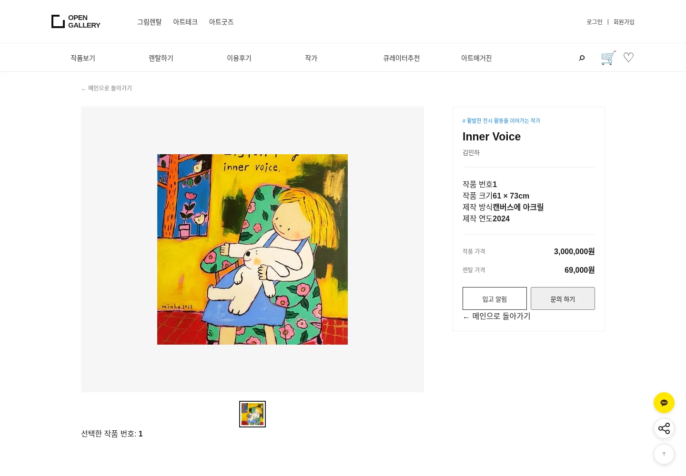

OPEN GALLERY / REACT UI
작품 탐색에서 상품 선택까지
오픈갤러리 UI 구현 프로젝트의 페이지별 화면입니다. 탭을 눌러 여섯 화면과 각 화면의 역할을 살펴보세요.
작품 상세
작품 이미지, 작가, 크기·재료·연도와 작품·렌탈 가격을 확인하는 화면입니다. 경로: /artwork/1

OPEN GALLERY / REACT UI
오픈갤러리 UI 구현 프로젝트의 페이지별 화면입니다. 탭을 눌러 여섯 화면과 각 화면의 역할을 살펴보세요.
작품 이미지, 작가, 크기·재료·연도와 작품·렌탈 가격을 확인하는 화면입니다. 경로: /artwork/1
